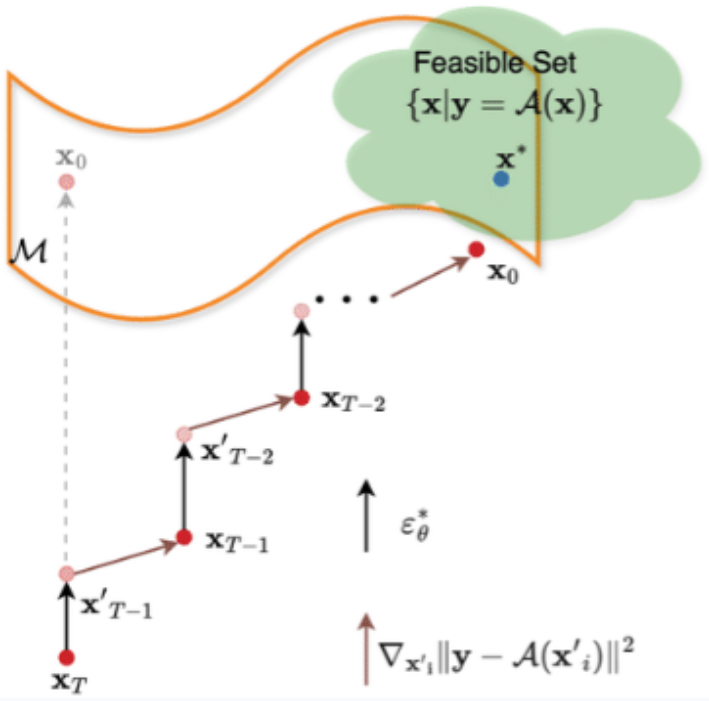
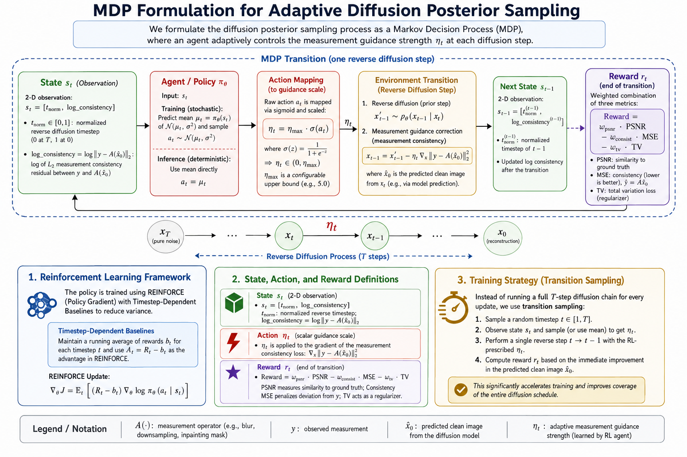
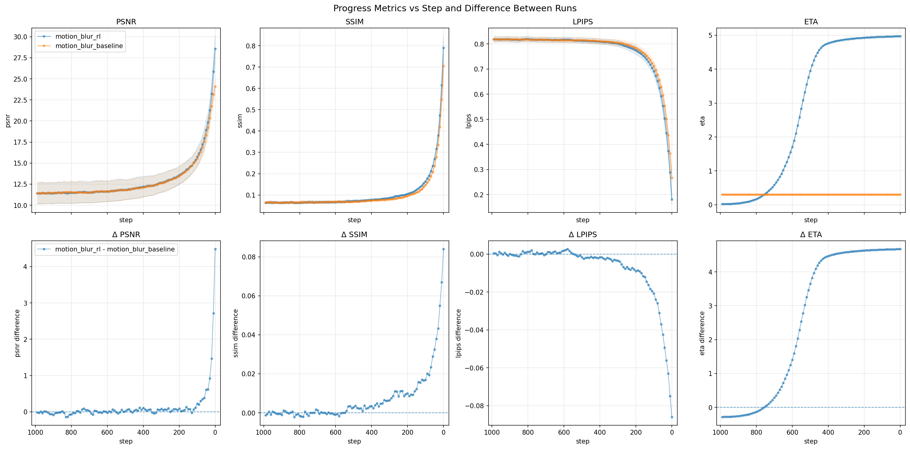
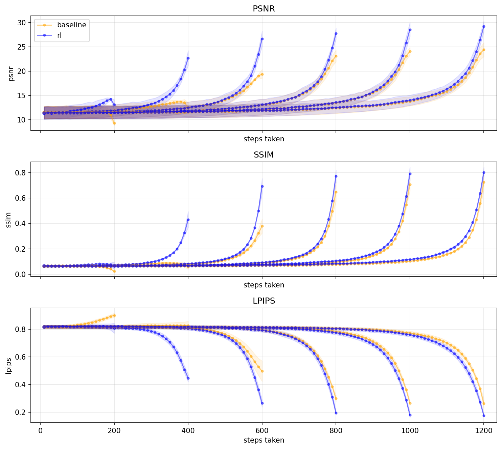
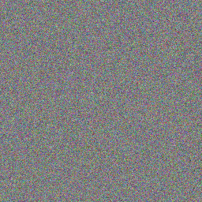
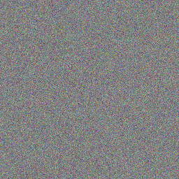
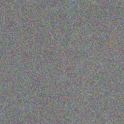
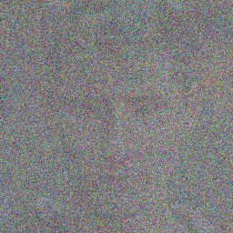
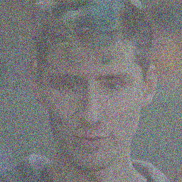
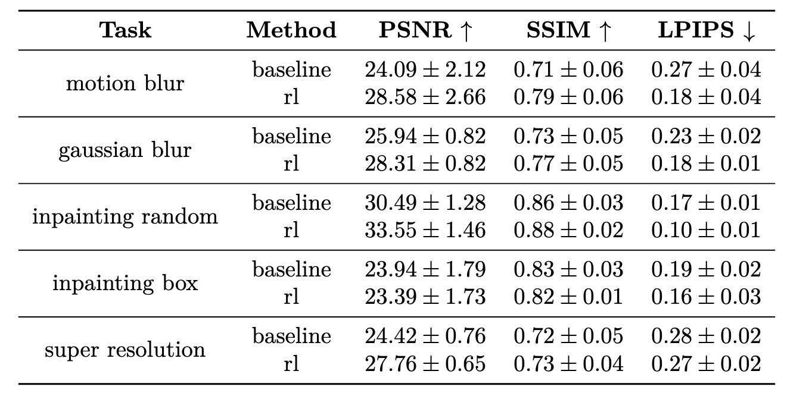

DMRL: Reinforcement Learning for Inverse Problems with Diffusion Models

Abstract
We study diffusion-based inverse problem reconstruction, where the goal is to recover a clean signal from noisy or incomplete measurements. Existing methods such as Diffusion Posterior Sampling (DPS) combine diffusion priors with measurement-consistency updates, but their performance strongly depends on the manually selected measurement guidance strength.
In this project, we formulate the reconstruction process as a sequential decision-making problem and use reinforcement learning to control the measurement guidance strength during diffusion sampling. The learned policy not only improves reconstruction quality over the DPS baseline, but also reveals an important scheduling behavior: the guidance strength should be small in the early noisy stage and become larger in the later reconstruction stage. This suggests that eta scheduling plays a crucial role in balancing generative prior guidance and measurement consistency for inverse problems.

Problem Formulation
We consider a general inverse problem where the goal is to recover an unknown clean signal x from a noisy or incomplete measurement y. The measurement process is modeled as
where A(·) denotes the forward measurement operator and n represents measurement noise. Examples include image deblurring, inpainting, and super-resolution. Diffusion-based reconstruction methods use a pretrained diffusion model as a generative prior and recover the clean image through a reverse sampling trajectory
During this reverse process, the diffusion model encourages samples to lie on the natural image manifold, while a measurement-consistency term encourages the reconstruction to match the observation y. The key challenge is how to balance these two forces over diffusion time.
Method
Diffusion Posterior Sampling introduces a measurement correction step into the reverse diffusion process. A typical measurement-guided update can be written as
Here, x't-1 is the standard reverse diffusion update, x̂0 is the predicted clean image, and ηt controls the strength of the measurement correction. Existing methods usually choose ηt using a fixed value or a manually designed schedule. In contrast, our method learns how to adapt ηt over diffusion time.
We model the reconstruction process as a Markov decision process. At each diffusion timestep, the state summarizes the current reconstruction status, including the current sample, timestep, and measurement consistency error. The action corresponds to the measurement guidance strength used in the correction step.
After each action, the environment performs one reverse diffusion update followed by a measurement-consistency correction. The policy is trained to select adaptive guidance strengths that improve reconstruction quality. Instead of using a manually designed schedule, the learned policy automatically determines when to increase or decrease measurement guidance during sampling.
Reward Design
The reward encourages both measurement consistency and reconstruction quality. Intuitively, the agent receives positive feedback when the measurement residual decreases during the reconstruction process, and when the final reconstructed image has better perceptual or pixel-level quality.
This reward design encourages the policy to discover a useful measurement-guidance schedule. The learned behavior suggests that small guidance is preferred in the early noisy stage, while stronger guidance becomes useful near the final reconstruction stage when the image structure is more reliable.

Empirical Finding I: Constant Guidance Strength
Before training the RL policy, we first examine how different constant values of the measurement guidance strength affect reconstruction quality. The constant-eta study is conducted on an FFHQ motion deblurring task with Gaussian measurement noise and 1000 diffusion steps.
The results show that the choice of eta is highly sensitive. A very small eta provides insufficient measurement correction, while an overly large eta can over-constrain the reconstruction and degrade perceptual quality. This observation motivates the need for a time-dependent eta schedule rather than a single fixed value throughout the diffusion process.
| η | PSNR ↑ | SSIM ↑ | LPIPS ↓ |
|---|---|---|---|
| 0.01 | 17.15 ± 0.88 | 0.60 ± 0.05 | 0.49 ± 0.04 |
| 0.1 | 22.86 ± 1.88 | 0.73 ± 0.03 | 0.31 ± 0.03 |
| 0.3 | 23.72 ± 2.48 | 0.67 ± 0.12 | 0.32 ± 0.08 |
| 0.5 | 24.78 ± 2.38 | 0.76 ± 0.04 | 0.24 ± 0.03 |
| 1 | 26.50 ± 3.28 | 0.80 ± 0.05 | 0.22 ± 0.04 |
| 5 | 23.24 ± 5.95 | 0.67 ± 0.22 | 0.33 ± 0.19 |
| 10 | 20.53 ± 6.80 | 0.50 ± 0.23 | 0.48 ± 0.19 |
Table 1. Quantitative comparison of different constant guidance strengths on FFHQ motion deblurring. Higher PSNR and SSIM are better, while lower LPIPS is better.
Empirical Findings
The RL-based adaptive guidance policy improves over the DPS baseline on FFHQ motion deblurring, increasing PSNR from 25.29 to 29.64, SSIM from 0.77 to 0.84, and reducing LPIPS from 0.25 to 0.16. Beyond the quantitative improvement, the learned eta trajectory provides insight into the reconstruction process: weak guidance is preferred in the early noisy stage, while stronger measurement guidance becomes useful in the later stage when the image structure is more reliable.
This behavior suggests that eta scheduling is not merely a hyperparameter-tuning detail, but an important component of diffusion-based inverse problem solving. The RL policy can be viewed as a data-driven way to discover an effective guidance schedule for balancing the diffusion prior and the measurement constraint.


Generation Trajectory at Different Noise Steps





Reconstruction trajectory at selected diffusion timesteps. The intermediate results show how the sample evolves from a noisy initial state to the final reconstruction. This visualization helps explain why eta scheduling matters: early steps operate on highly noisy samples, while later steps contain clearer image structures and can benefit from stronger measurement guidance.
Empirical Finding IV: Task-Level Comparison
We further evaluate the learned policy across multiple image restoration tasks, including motion blur, Gaussian blur, random inpainting, box inpainting, and super-resolution. The results show that adaptive eta scheduling generally improves reconstruction quality over the DPS baseline, although the improvement is less consistent for box inpainting.

Conclusion
This project demonstrates that reinforcement learning can be used to solve diffusion-based inverse problems by learning an adaptive measurement guidance policy. Instead of relying on a manually selected or fixed eta, the learned policy discovers a time-dependent guidance schedule that improves reconstruction quality over the DPS baseline.
More importantly, the learned policy provides an interpretable insight into the reconstruction process: eta should remain small in the early noisy stage and become larger near the end of sampling, when the image structure is more reliable. This suggests that guidance scheduling is a key factor in diffusion posterior sampling, and that RL can serve as a useful tool for discovering effective reconstruction strategies.
BibTeX
@misc{lin2026dmrl,
title={DMRL: Reinforcement Learning for Inverse Problems with Diffusion Models},
author={Kuan-Yu Lin and Joaquín Rus Bono and Junjie Shao},
year={2026},
note={535510 RL Team Project},
url={https://jrusbo.github.io/diffusion-posterior-sampling/}
}